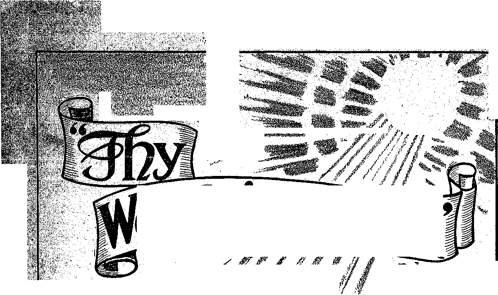
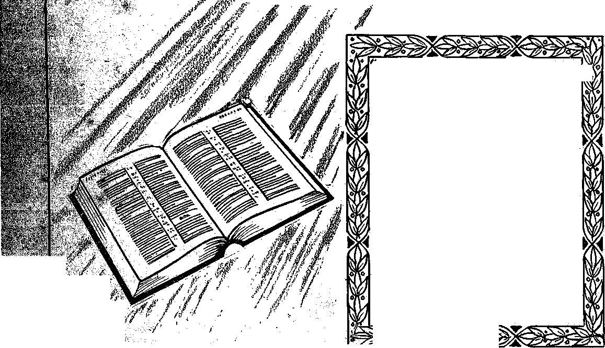

L b
e 4ft
'&$lL I? *■»
SSiMBOfilS
>
l J&r iSS <4 « "..... —__
sag fit
Announcing
4 Jehovah’s Kingdom
7'j
'Thy Word is Truth” '.Studies
They stall know t tat I am Jehovah"
-Ezekiel 35:15.
Semimonthly
DECEMBER 1, 1943
CONTENTS
Prayer and the New World............
Kings and Prophets as Examples.... The Master Teacher on the Question The Privilege of Sons ..........................
Aaron, Israel’s First High Priest..
The Presence of Jehovah ..............
19
21
24
26
28
29
18
Published Semimonthly by
JEHOVAH’S WITNESSES OF CANADA 300 Main Street - Toronto 13, Ont.
“And all thy children shall be taught of Jehovah; and great shall be the peace of thy children.”—Isaiah 54:13.
ITS MISSION
THIS journal is published for the purpose of enabling the people to know Jehovah God and his purposes as expressed in the Bible. It publishes Bible instruction specifically designed to aid Jehovah’s witnesses and all people of good-will. It arranges systematic Bible study for its readers and Jehovah’s witnesses supply other literature to aid in such studies. It publishes suitable material for radio broadcasting and for other means of public instruction in the Scriptures.
It adheres strictly to. the Bible as authority for its utterances. It is entirely free and separate from all religion, parties, sects or other worldly organizations. It is wholly and without reservation for the kingdom of Jehovah God under Christ his beloved King. It is not dogmatic, but invites careful and critical examination of its contents in the light of the Scriptures. It does not indulge in controversy, and its columns are not. open to personalities.
THE SCRIPTURES CLEARLY TEACH
THAT JEHOVAH is the only true God and is from everlasting to everlasting, the Maker of heaven and earth and the Giver of life to his creatures; that the Logos was the beginning of his creation, and his active agent in the creation of all other things, and is now the Lord Jesus Christ in glory, clothed with all power in heaven and earth, as the Chief Executive Officer of Jehovah;
THAT GOD created the earth for man, created perfect man for the earth and placed him upon it; that man willfully disobeyed God’s law and was sentenced to death; that by reason of Adam’s wrong act all men are born sinners and without the right to life; ,
THAT THE LOGOS was made human as the man Jesus and suffered death in order to produce the ransom or redemptive price for obedient ones of mankind; that God raised up Jesus divine and exalted him to heaven above every other creature and above every other name and clothed him with all power and authority;
THAT JEHOVAH’S ORGANIZATION is a Theocracy called Zion, and that Christ Jesus is the Chief Officer thereof and is the rightful King of the world; that the anointed and faithful followers of Christ Jesus are Children of Zion members of Jehovah’s organization, and are his witnesses whose duty and privilege it is to testify to the supremacy of Jehovah, declare his purposes toward mankind as expressed in the Bible, and to bear the fruits of the Kingdom before all who will hear; .
THAT THE OLD WORLD ended in A.D. 1914, and the Lord Jesus Christ has been placed by Jehovah upon his throne of authority, has ousted Satan from heaven and is proceeding to the establishment of the “new earth” of the New World; „
THAT THE RELIEF and blessings of the peoples of earth can come only by and through Jehovah’s kingdom under Christ, which has now begun; that the Lord’s next great act is the destruction of Satan’s organization and the complete establishment of righteousness in the earth, and that under the Kingdom the people of good-will that survive Armageddon shall carry out the divine mandate to “fill the earth” with a righteous race.
“THY WORD IS TRUTH” STUDIES
Week of January 16: “Prayer and the New World,” If 1-22 inclusive, Thy Word is Truth Dec. 1, 1943.
Week of January 23: “Prayer and the New World,” H23-43 inclusive, Thy Word is Truth Dec. 1, 1943.
Yearly Subscription Price $1.50
Notice to Subscribers: Acknowledgment of a new or a renewal subscription will be sent only when requested. Change of address, when requested, may be expected to appear on address label within one month. A renewal blank (carrying notice of expiration) will be sent with the journal one month before the subscription expires.
ALL SINCERE STUDENTS OF THE BIBLE who by reason of infirmity, poverty or adversity are unable to pay the subscription price may have Thy fFord is Truth free upon written application to the publishers, made once each year, stating the reason for so requesting it We are glad tn thus aid the needy, hut the written application once each year is required by the postal regulations.
jw-archive.org
December 1, 1943. ' No. 23
O thou that hearest prayer, unto thee shall all flesh come." (Ps. 65: 2) “And it shall come to pass^that before they call, I ivill answer; and ichile they are yet speaking, I will hear."—Isa. 65:2 J/.,
EHOVAH is within the reach of prayer by human creatures here on earth. He is not too lofty, nor too far removed, to be able to hear the expressions to him made by puny creatures amid our sinful and imperfect conditions. Neither is he indifferent and unconcerned. “The eyes of Jehovah are unto the righteous, and his ears unto their cry.” (Ps. 34 :15, Young) Only the lawless he tunes out: “The sacrifice of the wicked is an abomination to the Lord; but the prayer of the upright (without any animal sacrifice as -a persuasion) is his delight.” (Prov. 15 : 8) By his powers, which are more wonderful and incomprehensible than radio, he is able to detect and pick up man’s unvoiced petition offered within the hidden retreats of the heart or mind. And his powers of response are just as marvelous, to His glory. “Now unto him that is able to do exceeding abundantly above all that we ask or think, according to the power that worketh in us, unto him by glory.”—Eph. 3 : 20, 21.
2 The primary issue of God’s glorious universal domination must be settled here at the earth. Because of this Jehovah God could not be and is not indifferent toward the prayers of worthy creatures on this small planet. Rather than showing unconcern or preoccupation with other matters of seemingly greater importance respecting his unbounded universe, the Most High God of heaven and earth invites true prayer. He watches for it. The time is near when all creatures that gain life everlasting in peace, health and happiness will regularly draw near to him in prayer. That time is the righteous New World which Jehovah God creates. The central government of the New World, the heavenly kingdom of his royal Son, has been established; and the establishment and operations of the “new earth” draw nigh. Hence it is timely that the subject of prayer in its relation to the New World be examined. Prayer to the great Life-giver is vital to all life-seekers.
3 No religious prayer-book can give us the proper instructions and set the right standard as to this grand
1, Why may righteously-disposed creatures on earth hopefully offer prayer, even Within their hearts, to the Most High God?
2; .Why is Jehovah not'indifferent or unconcerned about prayer of creatures on earth? and why is it now timely to examine this subject of prayer anew? 3. Why go to the Bible rather than religious prayer-books for answers to our questions, and why are religious prayers inconsistent, useless, and destructive of faith ? privilege of communion with the mighty Creator. We must go to the Bible for answers to our many questions on this subject and for our model of prayer. The Bible was written by men who were inspired by the unfailing Hearer of prayer and who enjoyed and used the privilege of calling upon him in praise, thanksgiving and request. None of them were religionists. None of them, therefore, went in for the religious practices, formulae and mechanical-routine repetitions of prayers, things that amuse the demons but do not please the true God. The Bible writers showed up the emptiness and uselessness of religious prayers, and set forth in the Record the true and acceptable way to approach the living God. Today numberless prayers are being offered in private homes, in legislatures, on battlefields and on battleships, and in religious buildings, by men and women without respect of their side of the global war. Such prayers from both sides, addressed to the same God, presumably, are all for victory and lasting peace. Such prayers from opposite sides marked also World War I, and other conflicts and tribulations of worldly nations. The settlement of the matter in dispute was determined, not by religious praying of clergy or laity, but by the might of the military winner rather than the righteousness of the cause. Or if there was any settlement approaching righteousness, it did not usher in lasting peace with justice, morality and prosperity for the common man. Of what value actually was the religious praying except as a false bolster to the morale of the loser as well as the winner ? The losers lost not only the fight but also faith in prayer and in- God.
4 True prayer, offered in the right manner to the right One and on right matters, does count and bring results. The Bible Record gives many examples of praying rightly by men and women. It shows why their action was accepted and responded to by the One addressed. Their cases were written down and preserved for our instruction and encouragement. Religionists look upon the statement at Genesis 4 :26 as the first account of praying by men, namely: “And to Seth (the son of Adam and Eve), to him also there
What kind of prayer does count, and what can be said concerning Genesis : 26 as being the first account of prayer by men ? was born a son; and he called his name Enos: then began' men to call upon the name of the Lord (literally, the flame of Jehovah).” That was 235 years after the first man’s creation; and, if praying at all, it was religious praying. Actually, it was the beginning of. where men called themselves or their self-chosen false gods by the name of the one true God, Jehovah, the Supreme One. It was religious hypocrisy, which brought reproach upon Jehovah’s' name because it was a taking of his name in vain, and hence was religious sin.
5 More than a hundred years before Enos, his uncle Abel had lived and he offered acceptable sacrifice to Jehovah God. Although no prayer by Abel on that or any other occasion is reported, yet it is certain that in connection with his sacrifice Abel offered prayer to the Lord God, that his offering by fire might be accepted. The favorable answer to his prayer roused hatred and envy of his religious brother Cain, who thereafter slew Abel. But even Abel’s blood, which soaked the ground, cried out to God in a prayer for His vengeance against the religious bloodletter. (Heb. 11 : 4; 12 : 24; Gen. 4 :10, 11) Why were Abel’s sacrifice and prayer accepted of-Jehovah God? Because such were offered in faith; and “without faith it is impossible to please him: for he that cometh to God must believe that he is, and that he is a rewarder of them that diligently seek him”.—Heb. 11 : 6.
6 Faith means, yes, a belief in the true and living God, but that with an acceptance of His word as true and a hearty reliance upon it. Such confidence is shown by living in harmony with it, waiting for its fulfillment. Abel heard of God’s word, spoken in Eden, which sentenced his father Adam to death, but which also gave promise of a New World, established by God through the Seed taken from the womb or body of his holy universal organization. That Seed was to be hated by the great Seducer because the Seed would refuse to compromise God’s cause. He was to be bruised at “his heel” for that reason. But, let the hatred and painful treatment be what it might, the Seed of God’s organization was promised to overcome the seductive Serpent or Deceiver and to destroy him from the universe. This would insure a new, righteous and peaceable world. (Gen. 3 : 14, 15, 17-19) Abel testified in belief of that divine word, and offered sacrifice and prayer accordingly. His prayer was unselfish, being for vindication of God’s word as true. For his faith and faithful conduct God accounted him righteous even though descended from condemned Adam. Meeting such requirements Abel could address God and find acceptance. Less could not be required of men today
5. What evidence is there that more than a century before Enos prayer was offered to God, and why were such prayer and sacrifice acceptable to God ? fi, Concerning- what did Ahel exercise faith in God, and what does his case show as the least or minimum requirements for prayer by men to be acceptable. who want to pray without feeling it foolish but having certainty of being heard.
7 Abel is promised a. “better resurrection”. He will be .'back oh earth in the New World to which he looked ahead by faith. He will be one of the “princes in all the earth” then, as one of the represntatives of the invisible Government of God’s King, Christ Jesus, whose sacrifice Abel’s slain lamb foreshadowed.; (Heb. 11: 35, 39, 40; Ps. 45 : 1.6) -Other faithful men of bld who will 'be associate princes with Abel were likewise praying men. Their prayers were he^rd of God and answered for reasons like his. The patriarch Abraham prayed, and he was called the “father of all them that believe”. (Rom. 4 : 11) He was given the specific promise that God would make His name great by vindicating it against all that cursed the name of Jehovah. He would bless all the families of the earth that blessed His holy name. Abraham might be a party to this covenant by coming out from this world and living differently and doing so in hope of the promised world to come. Thenceforth Abraham’s sacrifices and prayers were all in harmony with that divine word of promise. Prayers of religionists are all for the sake of things of this world and its governments; they are-not in the interest of the righteous New World and its Theocratic Government. (Gen. 12 :1-3; 14 : 22, 23; 15 : 2-8; 20 : 7, 17) The true Seed of Abraham, Christ Jesus, the King of the New World, said to the patriarch’s natural descendants: “Your father Abraham rejoiced to see my day; and he saw it, and was glad.”—John 8 :-56. ;
8 Abraham’s natural heirs of the covenant-promise followed his example as to communion with the covenant-keeping God. Isaac prayed for his barren wife that a son might be provided to whom the birthright promise might be handed down. His blessing upon Jacob, when passing onward to this Son the promise of covenant blessings, was in itself a prayer to God. (Gen. 25 : 21; 27 : 27-29) After the dream of the ladder traveled by angels between heaven and earth Jacob’s vow to God was a form of petition to Him. Jacob’s wrestling all night with an angel and requesting a blessing before meeting his twin-brother Esau was also a strong supplication to the Lord and was in keeping with the hope of the New World.—Gen 28 : 16-22; 32:24-30.
9 Just 43'0 years passed after making the covenant with Abraham concerning the blessing of all families of the earth through the great nation that, God would bring forth through him. Then God added thereto another covenant, based on his law given through the '
7. (a) What future prospects are there for Abel ? (b) In harmony with what were Abraham’s prayers, and’ why did he rejoice?
8. What is there to show that Isaac and Jacob were men of prayer?
9. What was added in due time to the Abrahamic covenant, arid for .how long? and what statement of prayer did it instruct the priests to offer for the" whole nation ?
prophet Moses. This covenant was to continue in effect until the promised Seed, Christ Jesus,- should come. (Gal. 3 : 16, 17, 19, 24) In the terms of such law covenant very little, indeed, is said concerning prayer. There is the blessing which was to be pronounced "upon the whole covenant nation of God, as stated at Numbers 6 : 22-27: “And the Lord spake unto Moses, saying, Speak unto Aaron (the high priest) and unto his sons, saying. On this wise ye shall bless the children of Israel, saying unto them. The Lord
• bless thee, and keep thee; the Lord make his face shine upon thee, and be gracious- unto thee: the Lord lift up his countenance upon thee, and give thee peace. And they shall put my name upon the children of ■Israel; and I will bless them.” The nation of Israel . foretold and prefigured the new nation, of spiritual Israel, the apostle’s blessing upon whom corresponds with that of Israel’s high priest, namely: “And as many as walk according to this rule, peace be on them, and
< mercy, and upon the Israel of God.”—Gal. 6 : 16.
. 10 The law covenant through Moses also, gave the outline of prayer to be made in recognition of God’s goodness every third year at the time an Israelite brought the tithes of his,increase .before the altar of the Lord at- the temple. ' This included a confession of faithful obedience to God and closed with the petition: “Look down from thy holy habitation, from heaven, and bless thy people Israel, and the land which thou hast given us, as thou swarest unto our fathers, a land that floweth with milk and honey.”—Deut. 26 : 1-15.
< 11 The mediator of the law covenant with Israel, .Moses, was an. outstanding man of prayer with God. During the forty-year journey through the wilderness, when God signaled for the camp'to move, Moses always acknowledged Him before and after the move. “And it came to pass, when the ark set forward, that Moses'said, Rise up, Lord, and let thine enemies be scattered; and let them that hate thee flee before thee. And when it rested, he said, Return 0 Lord, unto the many thousands of Israel.” (Num. 10 : 35, 36) When the ten plagues were visited upon Egypt Moses several times entreated God at the request of Pharaoh for the lifting of the plagues. (Ex. 8 : 9, 28-30 ; 9 : 27-33; 10 : 17, 18) At Mount Sinai, when the Israelites sinned against the Lord by the worship of a golden calf, Moses acted as intercessor. He besought the Lord to spare the people upon whom His name was called, and that for His name’s sake. (Ex. 32:11-14, 20-24) Later the murmuring of the Israelites against Jehovah at the false, discouraging report of ten of the spies back from the Promised Land also required the intervention of Moses. (Num. 14 : .13-19) The Ninetieth Psalm bears the title:, “A prayer of Moses, the man of God”; and the
10. What instruction respecting prayer did it.give in connection with offer -ing tithes?
11. What is there in the Record and in the Psalms to show that Moses was an outstanding man of prayer, and in this whom did he prefigure?
next psalm is understood to be Moses’ composition too. It closes with this promise from God to his chosen people: “He shall call upon me, and I will answer him: I will be with him in trouble ; I will deliver .him, and honour him. With long life will I satisfy him, and shew him my salvation.” (Ps. 91 : 15, 16) Moses.was inspired to declare himself a type or prophetic figure of a greater prophet and mediator to come, namely, Christ Jesus. This One also proved to be a mighty intercessor and man of prayer.—Deut. 18 : 15-19 ; Acts 3 :20-23. . v. .
KINGS AND PROPHETS AS EXAMPLES'
12 The psalms composed by the shepherd-king David show where he belongs in the study of this subject; and David was a type of the Good Shepherd, the King of kings, Christ Jesus. Psalm 72 ends, with the words: “The prayers of David the son of Jesse are ended.” The prophet Samuel, who anointed the shepherd-boy David to be Israel’s future king, said to the Israelites when they had asked and 'been given a human king: “Moreover, as for me, God forbid that I should sin against the Lord in ceasing to pray for you: but I will teach you the good and the right way.” Samuel prayed for the nation because they were God’s Covenant people and his visible Theocratic organization upon whom the name of Jehovah was called. “For the Lord will not forsake his people for his great name’s sake; because it hath pleased the Lord to make you his people.”—l . Sam. 12.: 22, 23. . -
13 David’s public prayer shortly before his death, when turning over the kingdom and the temple preparations to his son Solomon', glorifies the true Theocracy and universal domination of God. Concerning this it is written: “Wherefore David blessed the Lord before all the congregation: and David said, Blessed be thou Lord God of Israel our father, for ever and ever. Thine, O Lord, is the greatness, and the power, and .the glory, and the victory, and the majesty: for all that is in the heaven and in the earth is thine; thine is the kingdom, O LORD, and thou art exalted as head above all. Both riches and honour come of thee, and thou reignest over all; and in thine hand is power and might; and in thine hand it is to make great, and to give strength unto- all. Now therefore, our God, we thank thee, and praise thy glorious name.’—1 Chron. 29 : 10-13. , f ^l
14 At the dedication of the completed temple King Solomon publicly offered up praise and thanksgiving to God, and a fervent petition for the blessing and protection of His chosen nation and for prosperity on the 1 2 3 worship of Jehovah at the place where he had put his name. He added: “And let these my words, wherewith I have made supplication before Jehovah, be nigh unto Jehovah our God day and night, that he maintain the cause of his servant, and the cause of his people Israel, as every day shall require; that all the peoples of the earth may know that Jehovah, he is God ; there is none else.” (1 Ki. 8 : 14-60, Am. Rev. .Ver.) Among the successors of Solomon to the throne who also offered supplication and praise to the Most High the Record includes kings Jehoshaphat, Asa, Hezekiah and Josiah.
15 The royal rulers of the nation were not alone in exercising this privilege toward God; those of the people thereof did also. In his discussion of the subject the apostle James writes: “Confess your faults one to another (hot to a priest in a confessional box), and pray one for another, that ye may be healed. The effectual fervent prayer of a righteous man availeth much. Elias was a man subject to like passions as we are, and he prayed earnestly that it might not rain; and it rained not on the earth by the space of three years and six months. And he prayed again, and the heaven gave rain, and the earth brought forth her fruit.” (Jas. 5 :16-18; 1 Ki. 17 :1; 18 : 42-44) During the drought Elijah’s part in raising a widow’s son to life was accomplished with supplication to Jehovah. —1 Ki. 17 : 19-24.
16 Elijah’s successor was also much given to calling upon the Lord. His cry at the edge of the Jordan ■’after he had smitten its waters, “Where is the Lord God of Elijah?” was answered by Elijah’s God with the dividing of the river waters to permit Elisha’s passage. When he was used of Almighty God to raise the Shunammite’s son from the dead, “he went in therefore, and shut the door upon them twain, and prayed unto the Lord.” The miracle followed. At Dothan, when his young servant cried out in terror at the enemy host surrounding them and threatening their destruction, “Elisha prayed, and said, Lord, I pray thee, open his eyes, that he may see. And the Lord opened the eyes of the young man; and he saw: and, behold, the mountain was full of horses and chariots of fire round about Elisha.” Again the prophet prayed, and the Syrian hosts were smitten with open-eyed blindness, as Elisha led them into the camp of the Israelites. (2 Ki. 2 :14; 4 : 33-35; 6 : 17-20) Elisha : and his predecessor Elijah were both used of God to foreshadow Jehovah’s “strange work” through his faithful witnesses in these modern times before he brings in the New World in completeness. The communication of those ancient men with the God of heaven shows that the work of Jehovah’s witnesses in
15. Who else besides the Israelite kings offered prayer, and what doos the apostle Janies testify concerning Elijah as doing so?
16. (a) What instances are there showing Elisha was a man of prayer? (b) What were Elijah and Eliisha used to foreshadow, and what did their recourse to prayer indicate concerning this? these days cannot be effected by them without likewise calling upon God for help, protection and blessing.
17 Other men of Israel who figure prominently jn the panorama of prayer are Job, Jonah, Ilabakkuk, Jeremiah, Ezra, Nehemiah, and Daniel. Job, a contemporary of the prophet’Moses, was an example of patient endurance with integrity toward God. He drew near to Jehovah both in prosperity and in affliction, and after his restoration. He is a pictorial representation of all humans who maintain their integrity during this time when wickedness is permitted and who are thereby accounted worthy of life in the. New World. Job was instructed to act as intercessor for self-styled friends who had wronged him grievously; and the Record tells us: “And the Lord turned the captivity of Job, when he prayed for his friends: also the Lord gave Job twice as much as he had before.”:—Job 1 : 5, 20, 21; 42 : 8, 10.
18 Jonah had the unique experience of lifting his heart and voice to Almighty God from the belly of a . sea-monster. From that living submarine he was heard; and concerning this the account says: “Then Jonah prayed unto the Lord his God out of the fish’s belly, and said, I cried by reason of mine affliction unto the Lord, and he heard me; out of the belly of hell [ (margin) out of the belly of the grave] cried I, and thou heardest my voice.” In being delivered from that tomblike condition Jonah primarily pictured Christ Jesus, who was raised from the dead on the third day to be the King of the New World. In praying down in the depths of the sea he also pictured the remnant of the members of the body of Clirist’S followers. These were apparently the “children of death” in 1918, but were brought forth from their sepulchral condition of Christian inactivity in 1919. (Jonah 2 :1, 2; Ezek. 37 : 1-14) Thereafter such remnant, like Jonah, applied themselves to the work of preaching God’s message to the nations threatened with destruction; at the battle of Armageddon by the “strange act” of God. (Jonah 3 : 1-10) Those Ninevites who repented at Jonah’s preaching escaped destruction which came upon Nineveh in due time. Persons now repenting at the mes- . sage of Jehovah’s witnesses will be spared by Jehovah’s executioners at Armageddon to find everlasting life in the New World.
19 Jeremiah also found it necessary to seek the face of the Lord who sent this prophet to bear witness to His name and purpose. (Jer. 32 : 16; 7 :16; 14 :11; 4'2 : 4) For forty years Jeremiah declared the day of God’s vengeance against hypocritical religionists find their temple and city, for the vindication of Jehovah’s
17. 'What instances are there to show whether Job engaged in prayer ? and - :
whom did he pictbrialy represent? '
18. Where is Jonah recorded as praying? and whom did he picture' there and; . \ also in preaching to Nineveh thereafter?
19. (a) Why was it necessary for Jeremiah to pray? and whom did he pic-ture? (b) What prayer did Habakkuk offer? and what did Hosea and Joel urge God’s people to do?
name. In this Jeremiah pictured the Lord’s witnesses : now engaged in his “strange Work” which warns of his
"strange act” of destruction upon religious “Christendom” in the tribulation of Armageddon. The prophet Habakkuk foretold of like destruction upon the hypocritical religious organization. His thrilling description, in chapter three, of God’s “strange act” at the final end of the world is headed Or introduced by the words: “A prayer of Habakkuk the prophet upon Shig-ionsqth [(margin) or, according to variable songs; ^Roth.) in the manner of an ode].” (Hab. 3 : 1) His ■ exclamation at. the vision indeed constitutes a prayer that Jehovah’s faithful remnant and their companions now pray, that Jehovah may avenge and vindicate his name upon his enemies before bringing in the New .World in its fullness.' The prophets Hosea and Joel exhorted God’s people caught in the snare of religion to turn to him with supplications for his mercies and for help to walk thereafter according to His covenant. —Hos. 14 : 1, 2; Joel 2 : 15-17.
20 Ezra, the scribe and priest, was one who joined the remnant of Jews that had left their exile in Babylon and returned to the Holy Land to rebuild the temple on Zion’s hill. Rather than require a military escort from the ruler of Babylon, Ezra reports, “so we fasted, and besought our God for this; and he was entreated of us.” They safely reached the temple site Without incident. Among the restored remnant of Jehovah’s people Ezra found conditions that deserved to be laid before the Lord God. The Record reads: “Now when Ezra had prayed, and when he had confessed, weeping and casting himself down before the house of God, there assembled unto him out of Israel a very 'great congregation of men, and women, and children: for the people wept very sore.” Then the troublesome matter was straightend out in harmony with God’s law.-—Ezra 8 : 22, 23; 10; : 1.
■ 21 Nehemiah was another one concerned about the . condition of the remnant that had quit Babylon to go up to worship and serve Jehovah in the land which he had given them. Very much depressed at the news brought to him, Nehemiah says: “And it came to pass, when I heard these words, that I sat down and wept, and mourned certain days, and fasted, and prayed before the God of heaven.” Repeatedly he asked the Lord to be attentive to his prayer that he might be used of him toward the betterment of the state of the remnant. His prayer was answered, and he was used for the rebuilding of the walls of Jerusalem. While engaged in that work, with enemies all round about threatening violence, Nehemiah says, “nevertheless we made our prayer unto our God, and set a watch against them day and night, because of them.” In surprising
20. On what two special occasions did Ezra pray to God? and with what results ?
21. What special record of prayer is made concerning Nehemiah abroad and at Jerusalem, and its results? time th;e city walls were raised up between the Jews and the enemies.'—Neh. 1 : 4, 6, 11; 4 : 9; 6 :15. •
22 The great test that led to Daniel’s being cast into the lion’s den for his faithfulness came because he was a man who could not be restrained from prayer to God. His enemies had the decree framed limiting all prayer for thirty days to King Darius, of Medo-Persia. Then Daniel knowingly “went into his house; and his windows being open in his chamber toward Jerusalem, he kneeled upon his knees three times a day, and prayed, and gave thanks before his God, as he did aforetime”. Daniel’s course of open and known communion with God despite heathen decrees was approved by the great Judge of all in that He rescued Daniel from the lion’s fangs. (Dan. 6 : 10, 21-27) Supplication to God also brought to Daniel the recovery and interpretation of Nebuchadnezzar’s lost dream of the terrible metallic image. (Dan. 2 : 16-19) Prayer also preceded the revelation to Daniel of the seventy weeks of years leading up to. Messiah the Prince’s appearance on earth (Dan. 9 : 3, 4, 20-27) ; also the marvelous prophecy as to the hostilities of “the king of the north” and “the king of the south” at the “time of the end”, and the standing up of the mighty Prince of God’s people to bring in the New World.—Dan. 10 :2, 3, 12; 11 :, 1-45; 12 :1-13.
23 After the flight of several centuries from Malachi, the last of the old Hebrew’ prophets, there appeared another prophet, who was a miniature fulfillment of Malachi’s prophecy concerning Elijah. (Mal. 4:5, 6; Matt. 11 :13, 14; 17 :10-13) This favored prophet was John the Baptist, the forerunner of the true Seed of Abraham upon whom all blessings for all families of the earth rest. John’s father was a man of faith and prayer. That is sure from the Record: “According to the custom of the priest’s office, his lot was to burn incense when he went into the temple of the Lord. And the whole multitude of the people were praying without, at the time of incense. And there appeared unto him an angel of the Lord, standing on the right side of the altar of incense. And when Zacharias saw him, he was troubled, and fear fell upon him. But the angel said unto him, Fear not, Zacharias: for. thy prayer is heard; and thy wife Elisabeth shall bear thee a son, and thou shalt call his name John.”—-Luke 1 : 9-13.
24 John grew up in the deserts till his testimony concerning Jehovah’s purpose and the coming of the Messiah was due to begin. Disciples or learners gathered about John at his preaching. He baptized the repentant ones in water. Among other things, he showed them their relationship to God and instructed 4 5 6
them, as to approaching and addressing Him. Hence Jesus’ followers asked the Master for like instruction; as recorded: “And it came to pass, that as he was praying in. a certain place, when he ceased, one of his disciples said unto him, Lord, teach us to pray, as John also taught his disciples.” (Luke 11.: 1) . Others ‘‘said' . , unto him, Why do the disciples of John fast often, and . make prayers, . . ./but thine eat and drink?” Luke
5 : 33) Jesus then explained why they did not fast.
25 All flie above-noted men lived and died before Jesus’ death and resurrection and ascension, to heaven. Upon what basis, then, could those men draw nigh to God in prayer..and find a hearing ear and answer from Him ? The religious belief is that any and all men anywhere and at any time may offer a prayer and, if it is sincere and earnest, it will find its way to God and be accepted of him. The Bible reply does not support that. The men whose prayers were accepted of old time were men of faith in the true and living God, . Jehovah, «-Because they believed, in his existence and supremacy, they also believed and depended upon his word. Hence they avoided religion and its worship of demon gods and its acceptance of man’s word, particularly the word of religious clergymen. They believed - God’s word as it was added to by His further revelations from time to time. Always it pointed to the coming of his Seed, the Deliverer, and the creating of a new world. So they did not fall in with the schemes arid policies of men regarding this old world under derpon rule. In hope of the new world they walked according to God’s word and devoted themselves to w ' pleasing him. Their faith and devotion to God and his purpose brought them a measure of righteousness or justification, which then made them acceptable with God. Such justification, was a picture of the true justification that Should come to Christ’s faithful fol-
7 lowers.-—Rom. 4 : 22-25.'
26From Moses’ time forward till Christ those whose prayers God recognized were faithful members of his chosen people of Israel. They were in relationship with the Most High God by the covenant of his law given ' A through Moses the mediator. Thus they were persons
. ‘ in covenant bonds with God and who were endeavoring . to be faithful to the covenant by loving obedience.
Any who were, aliens and strangers to the nation of Israel and outside its covenant must approach God through his organized people and in the manner of worship he had ordained in connection with his temple. Only thus could strangers, such as Rahab, the Gibeon-ites, Jael, Ruth, the Nethinim, the widow of Zarephath, . Naaman the Syrian, Ebed-melech, and others, find any ; favor from God and any answer to prayer. To this
25 . Upon what basis could the men of old before Moses draw near to God in prayer and get a hearing and answer?
26 . From. Moses onward what further basis for offering acceptable prayer was there, and how only could- “strangers” approach God in prayer and receive answer ?
effect King Solomon said, when dedicating the temple: “Moreover concerning the stranger, which is. not of thyi -people Israel, but is come from a far country for thy great name's sake, and thy mighty hand, and thy stretched out arm; if they come and pray in this house; then hear thou from the heavens, even from’ thy dwelling place, and do according to all that the'' stranger calleth to thee for; that all people of the/ earth may know thy name, and fear thee, as doth,thy people Israel, and may know that this house which I have built is called by thy name.” (2 Chron. 6 : 32, 33) : Such provision for the “stranger” should be of great encouragement and consolation to those who,feel far,, off from Jehovah and unacquainted with Him, and who' now are inclined to “seek the Lord, if haply they might feel after' him,, and find him”.—Acts 17 : 27. , ' '
THE MASTER TEACHER ON THE QUESTION
27 The argument may be raised, that the above-related cases of communication between God and man. : were before the coming of Christ Jesus and that since his coming the conditions respecting prayer have been ' radically changed and all formality has been cast out. Those arguing so depend heavily on Jesus’ condemnation of the procedure of the Jewish religionists of his -day. They quote his words: “And when thou prayest, thou shalt not be as the hypocrites are: for they love to pray standing in the synagogues and in the corners'.'^ of the streets, that they may be seen of " men. Verily I say unto you, They have their reward. But thou, ; when thou prayest, enter into thy closet, and when, thou hast shut thy door, pray to thy Father which is in secret ; and thy Father which seeth in secret shall . reward thee openly. But when ye pray, use not vain . repetitions, as the,heathen do: for they think that they :> shall be heard for their much speaking. Be not ye / therefore like unto them: for your Father knoweth ■ what things ye have need ofy before ye ask him. After ■ this manner therefore pray ye: Our Father which art’ in heaven, Hallowed be thy name. Thy kingdom come.' Thy will be done in earth, as it is in heaven. Give, us, this day our daily bread. And forgive us our debts, as we forgive our debtors. And lead us not into temp- . tatiori, but deliver us from evil.” (Matt. 6 : 5-13; Luke 11 : 1-4) “Woe unto you, scribes and Pharisees, hypo- jy crites! for ye devour widows’ houses, and for a pre-' fence make long prayer: therefore ye shall receive the... greater (condemnation) .’’-—Matt. 23:14; Mark 12:40 ; // Luke 201 : 47; 18 : 9-11.
28 Are Jesus’ words to be understood as holding down all prayer by his followers to private prayer un- • observed by all others, even by fellow Christians ? Do his words cut out all public prayer amid an audience? .
27. Since Christ, what radical argument may be made by some concerning /? prayer, and upon what words of Jesus do they base their argument?' . / 28. What questions, therefore, arise concerning prayer ? arid why- may the / Bible record be expected to give satisfactory answers?
. December 1, 1943
Is there to be no regularity about prayer in the endeavor to avoid repetitions? Do Jesus’ words con-k demn Dahiel for three times daily offering petition to
God where'he could be observed by his enemies and ( ; hence be turned over by them to the lions? Where ' should .prayer bo presented, and how? These and - many other questions can be answered satisfactorily ’ _ by looking at -the Record which has the approbation
. arid imprimatur of Jehovah God and his High Priest;
' ..ChYist' Jesus. That very Record closes with prayers * Written so they can be read by all: “Even so, come, Lord Jesus. The grace of our Lord Jesus Christ be
'with you all. Amen.”—Rev. 22 : 20, 21.
2’9 To the Samaritan woman at the well near Mount 1 Gerizim Jesus said: “Woman, believe me, the hour cometh, when ye shall neither in this mountain, nor yet at Jerusalem, worship the'Father. But the hour-cometh, and now is, when the true wbrshippers shall -worship the Father in spirit and in truth: for the Father seeketh such to worship him; God is a Spirit: 3 and they that worship him must worship him in spirit and in truth.” (John 4: 21, 23, 24) The hour has come where worship of Jehovah God, including prayer, is not restricted to any city or building. It is no longer need-
: ful, as in Daniel’s case, to pray with one’s windows open and face.turned toward the site of ancient Jerusalem.
- It is not necessary, as in the case of worshippers in the - .temple at Jerusalem, to pray with the face westward triwal'd?the Holy of Holies. Since the “Most High dwelleth not in temples made with hands”, one’s pos-' - ture or the direction of petition and thanksgiving need not'be toward any earthly site. One’s attention and J offering ’ should be to the God -of heaven and earth.
1 ‘‘For from the rising of the sun even unto the going J’ , down of the same (from east to west) my name shall
i Jae great among the Gentiles (the nations) ; and in place incense (accohipanying prayer) shall be '/ ’-offered unto my name, and a pure offering: for my ’flame shall be great 'among the heathen, saith the .Lord of-hosts.”—Mal. 1 : 11.
At the very beginning of his earthly ministry as - Y Jehovah’s “faithful and true witness” Jesus is observed .at.prayer, in the presence of John the Baptist. “Now ’ when all the people were baptized, it came to pass, that Jesus also being baptized, and Praying, the heaven was opened, and the holy (spirit) descended in a bodily shape like a dove’ upon hifn, and a voice came from heaven, which said, Thou art my beloved Son; in thee I am well pleased,” (Luke 3 : 21, 22) That voice was • a response to Jesus’ petition. The apostle Paul’s Words, at Hebrews 10 : 5-10, indicate that, while thus praying, Jesus had in mind Psalm 40 : 6-8: “Sacrifice and offering (of animals) thou didst not desire; mine
29.- W'hat did Jesus say to the Samaritan woman at the well respecting, wor-Ahip, and what does this indicate as to posture, direction or place ir> offering prayer?
•30. ’When was Jesus first observed in prayer, and what does the apostle Paul indicate was on Jesus’ mind at tl\e time? ears hast thou opened: burnt, offering and sin offering; ; , hast thou not required. Then said I, Lo, I come: in the volume of the book it is written of me, I delight to , . do thy will, 0 my God; yea, thy law is within my heart.” This was an expression of Jesus’ consecration of himself to his God and Father, Jehovah.
31 The Father’s voice from heaven and the sending down of his spirit or active force on Jesus was open proof of his acceptance of Jesus’ consecration and the offering of himself. Jesus’ attitude at his water baptism was prayerful. This shows his.followers that the occasion of being, immersed in water is a time of serious consideration, one of looking to God and asking for help to carry out what is symbolized by such baptism, namely, one’s consecration to God. . -
32 Jesus prayed to the Most High God, "His Father, " Jehovah. He did not pray to himself, which he would have been doing if he were a member of a religious- ' “trinity of three persons in one God.” Jesus was on earth. His God and Father was in heaven. Regularly during his earthly witness to God’s kingdom Jesus offered supplication and thanksgiving to God. If Jesus were God Almighty Most High himself, then it was foolish for Jesus thus to. pray; for .he would be praying • to himself and would be hypocritical, deceiving any who heard and observed him at prayer on numerous occasions. - It was fitting, however, for him to offer up petition to God, for he is Jehovah’s Son: “who in the days of his flesh, when he had offered up prayers’ and supplications with strong crying and tears unto him that was able to save him from death, and was heard in that he feared; though he were a Son, yet learned he obedience by. the things which he suffered; and being made perfect, he became the author of eternal salvation unto all them that obey him ; called of God an high priest after the order of Melchisedec;” (Heb. 5 : 7-1'0) The priest-king of old, Melchizedek, publicly prayed Jehovah’s blessing upon Abraham.— Gen. 14 : 18-20; Heb. 7 : 1. '■
33 In the sermon on the mount Jesus’ words com cerning prayer in secret did not mean that thenceforth Jesus did not go1 up as a Jew the three- required times each year to the temple at Jerusalem and join in the public prayers that Were there offered by all the congregation at the time of offering the incense. (Luke 1 : 9, 10; Rev. 5:8; 8 : 3, 4) Jesus’ presence at such feasts in Jerusalem is repeatedly reported. As a Jew according to the flesh he was “made of a woman, made under the law”, and said he : “Think not that I am come to destroy the law, or the prophets: I am not come to destroy, but to fulfil.” Accordingly he continued celebrating the feast of the passover until the
31. What do the Father’s voice and the descent of the spirit therefore prove?-and what should be the attitude of Jesus’ followers at time of water baptism? 32. What foolish deductions respecting prayer does the “trinity” doctrine lead to, and why was it fitting for Jesus to pray to God?
33. After Jesus’ words concerning prayer in secret, what about his own joining in public prayer at the temple of offering up personal prayer there? paschal sacrifice was fulfilled in himself and he became “Christ our passover”; (Gal. 4 : 4 ; Matt. 5 : 17; 1 Cor. 5 : 7) So it was that Jesus is reported at his last typical passover feast and as offering up in the hearing of those come to the feast this request: “Now is my soul troubled; and what shall I say? Father, save me from this hour: but for this cause came I unto this hour. Father, glorify thy name.” “Then came there a voice from heaven, saying, I have both glorified it, and will glorify it again. The people therefore, that stood by, and heard it, said that it thundered: others said, An angel spake to him. Jesus answered and said, This voice came not because of me, but for your sakes.” (John 12 : 20-30) Jesus did not violate his own instructions concerning secret prayer; for his Father answered his public prayer with public response.
34 Jesus was anointed with God’s spirit to be the King of the Government of the New World, and all his petitions .to his Father were in behalf of that world to come. In Jesus particularly the primary issue of Jehovah’s universal domination was at stake. How so? Because Jesus is Chief Executive in the Government through which God has chosen to exercise his universal sovereignty and through which also he will for. ever vindicate his blasphemed name. Satan the Devil and would-be usurper of the universal domination tried to destroy the Government at its very root by striving to make Jesus fail of worthiness of the king-ship. He used all his devilish arts and means to make Jesus come to terms with him and break his faultless integrity toward the Most High God. But Jesus was uncompromising toward God’s adversary. He proved that Jehovah’s chief Son and highest officer in His universe was unbreakably loyal and faithful and true to Him. To keep his grip on his integrity toward Jehovah, Jesus drew on the divine strength by supplication to Him. This enabled him to vindicate his Father’s name and word by unswerving obedience and a correctness of course On earth. So he proved worthy to exercise the powers of the New World government and vindicate Jehovah’s name at the battle of Armageddon. For related reasons, namely, to keep integrity and share with Jesus in vindicating God’s name, his faithful followers need likewise to resort to prayer.
35 Jesus must have been praying behind no shut door of a secret closet but in the hearing of others, when that recorded at Luke 11 : 1, 2 occurred: “And it came to pass, that as he was praying in a certain place, when he ceased, one of his disciples said unto him, Lord, teach us to pray, as John also taught his disciples. And he said unto them, When ye pray say, Our Father which art in heaven, Hallowed be thy name. Thy kingdom come. Thy will be done, as in 34. (a) How was the primary issue particularly at stake in Jesus, and why would this fact specially require prayer on his part? (b) Why, then, is it appropriate for his followers to pray?
35: ' Where was Jesus’ praying when he was afterwards asked to teach his disciples to pray, and what did he then show as to divinely guided prayer? heaven, so'in earth.” Jesus did not brush the subject of prayer aside as from henceforth an indifferent matter, governed by suddenly arising emergencies and not having directive objectives. He showed that, divinely guided prayer concerns itself with the New. World and its Government which will cause God’s name to be hallowed in all creation. He did not teach that prayer be offered to his human mother or to any saints after death, to act as intercessors. It should be offered up to the Creator of the New World. Address to Jehovah, not alone as God but in the new relation of “Our Father”, was by no means indicating that the so-called “Fatherhood of God” toward all men was now established and that all men on earth, as creatures, could approach God and address him as “Our Father.”
36 Universal “Fatherhood of God” doctrine does not fit in with Jesus' words to the religionists: “Ye are of your father the devil, and the lusts of your father ye will do. He was a murderer from the beginning, and abode not in the truth, because there is no truth in? him. When he speaketh a lie, he. speaketh of his own: for he is a liar, and the father of it.” (John 8 : 44) Fatherhood of God did not apply to Cain, the brother of Abel: “Not as Cain, who was of that wicked one,, and slew his brother. And wherefore slew he him? Because his own works were evil, and his brother’s righteous.”—1 John 3 :12.
THE PRIVILEGE OF SONS
37 Men assume that, because they are descended from a creature of God, the first man Adam, they are sons of God and may address him in petition as “Our Father.” Contrariwise, this very form of approach as introduced by Jesus shows who only may draw near to God and make known their requests to him. The disciples Whom Jesus thus taught were, first of all, members of the Jewish nation which was in the law covenant with God, and hence were His people. Also these men had left all to follow the Son of God. Thus, besides what they were naturally as Jews by birth, they were wholly consecrated to God as Jesus was. They Were men of faith in Jehovah God like their fore-' fathers Noah, Abraham, Isaac, and Jacob. They believed in God’s Word, and especially his promises concerning the coming Messiah, or Christ, the Seed of Abraham. In expression of that belief-they followed Jesus. He knew that God’s spirit was to be poured out upon all consecrated flesh of this kind and that these would be begotten of God’s spirit to become his spiritual children, spiritual Israelites, the children of the One whom Abraham typified, Jehovah. As such prospective children of God Jesus taught them to express themselves to God as “Our Father”. The other Jews
86. When introducing the form of address "Our Father", why could not Jesus have been teaching the "Fatherhood of God’’ toward all men?
37. By the address "Oar Father’’ what was Jesus 1'eally showing, and. why could he properly teach his disciples to pray thus to God? that did not believe on him could not use this prayer. Therefore it is written: “He came unto his own, and his. own received him not. But as many as received him, to them gave he power to become the sons of God, evqn to them that believe on his name: which were . boyn, not of blood, nor of the will of the flesh, nor of the will of man, 'but of God.”—John 1 :11-13.
. 7 Such spirit-begotten sons of God, being anointed of Him and proving faithful to death, are all to be associated with Christ Jesus in the Government of the New' World. Rightly their prayer would be looking toward that coming world and in the interest of God’s kingdom. The apostle Peter wrote to such, saying: “Nevertheless, we, according to his promise, look for new heavens and a new earth, wherein dwelleth righteousness. Wherefore, beloved, seeing that ye look for-such things, be diligent that ye may be found of him in peace, without spot, and blameless.” (2 Pet. 3 :13, 14) Such, sons make up the “Israel of God”, not after the flesh but after the spirit, and hence,His “holy nation”. (1 Pet. 2 :9) Prior to Christ “Israel after the flesh” was the only nation having access to God during the time of their favor with him. Thereafter the “holy nation” of spiritual Israel was the only body of people privileged to pray to Jehovah God as “Our Father” and with answers in view. This exclusive privilege of these spiritual sons of God continued down to the sett-ing1 up of the heavenly Government of the New World in A.D. 1914 and the coming of its King to the temple thereafter in 1918. Since then God’s favor has been going out to those who were foreshadowed by the “Strangers” that lined themselves up with God’s chosen people of old. Clearing up of the privileges of these present-day companions of the remnant of God’s “holy nation” will be made later.
89 In addition to his words in the sermon on the mount Jesus gave some final instructions concerning prayer to his disciples on the night of his betrayal and arrest. He said: “I am the way, and the truth, and the life: no man cometh unto the Father, but by me. ■5. I go unto my Father. And whatsoever ye shall ask in my name, that will I do, that the Father may be glorified in the Son. If ye shall ask any thing in my name, I will do it. If ye abide in me, and my words abide in you, ye shall ask what ye will, and it shall be done unto you. Ye have not chosen me, but . I have chosen you, and ordained you, that ye should go and bring forth fruit, and that your fruit shoud remain : that whatsoever ye shall ask of the Father in my name, he may give it you. . , . Verily, verily, I say unto you, Whatsoever ye shall ask the Father in my name, he will give it you. Hitherto have ye asked nothing in my name: ask, and ye shall receive, that your joy may be full.”—John 14 : 6, 12-14; 15 : 7, 16; 16 :23, 24.
40 After his conversation which included the above words Jesus then, in the presence of the eleven faithful disciples, “lifted up his eyes to heaven.” He prayed for them, and for all those who would believe on Jehovah God and Christ Jesus through their testimony or witness. Then he led them out to the garden of Gethsemane, where he prayed apart from them and received strength to endure the supreme test just ahead.—John 17 : 1-26; 18 : 1; Matt. 26 : 36-46.
41 The sum of the above is this: Henceforth no creature on earth could go to God with petition and have His recognition and answer unless he came by way of Christ Jesus and offered his requests in the name of the Son of God. Jesus’ faithful course of integrity toward God even unto death proved him worthy of a resurrection to life in the spirit and a return to his Father in heaven;' and thereby Christ Jesus was opening up a way for believing humankind to come to God.
42 By his ransom sacrifice Jesus takes way the sin of such believers, and by this they are made acceptable to God as his children. Of old Moses was mediator between Jehovah and Israel. Now Christ Jesus, whom Moses foretold and prefigured, is the “one mediator between God and men” of Spiritual Israel. Hence approach to the great Hearer of prayer may be, not direct, but only through his Son. All prayer must be offered up in his name. (1 Tim. 2 : 5. 6) God does not deny himself, neither does his Son deny him; and hence the above rules regarding prayer may not be bypassed and ignored. To try to do so would be presumptuous and would meet with no success.
43 The subject is a large one, because it is important. We are at the portals of the New World. Men of goodwill desire and expect to enter into life everlasting in that world without end. They are asking about the privilege and the proprieties of prayer. A related article in the next succeeding issue of this magazine will answer such questions.
40. Thereafter on that same night what prayer did he himself offer?
41, What do Jesus’ above instructions show as to offering prayer henceforth, and how did he himself open up the way for it?
42. Why thenceforth must all prayer be ..offered up in Jesus’ name?.
43. With whom does the subject of prayer next concern itself, and why?
4 ARON played a very important role in the early 4X history of the typical Theocratic nation. Con-tempo raucous with Moses,. Aaron’s course was over-shadowed to some extent by the leading role played by his better-known brother; yet believers in God’s Word, will hot lose sight of Aaron’s activities at the time of Israel’s birth as a typicalTheocracy, and his: duties relative..to that nation’s worship of Jehovah, as ordered at Mount Sinai and thereafter God-fearing Christians today will not ignore this prophetic his-u tory concerning the exodus and the wilderness trek, ■r ■ remembering the apostle Paul’s declaration that it was recorded particularly for Christians on earth at the ‘time of the end’. (1 Cor. 101 : 1-11)" As high priest Aaron foreshadowed Christ Jesus alone, and at still other times he pictured the anointed remnant on earth, during these last days of Satan’s rule.
In 1598 B.C. Aaron was born, to Amram and Jochebed, in the land of Egypt. • In course of time .he married Elisheba and had four sons, Nadab, Abihu; Eleazar, and Ithamar. The first mention of Aaron appears in the Divine Record at Exodus 4 :14-46: “And the anger of Jehovah was kindled against Moses, and he said, Is there not Aaron thy brother the Levite ? I know that he can speak well. And also, behold, he cometh forth to meet thee: and when he seeth thee, he will be glad in his heart. And thou shalt speak unto him, and put the words in his mouth: and I will be with thy. mouth, and with his mouth, and will teach you what ye shall do. And he shall be thy spokesman unto the people ; and it shall come to pass, that he shall be to thee a mouth, and thou shalt be to him as God.” (4.R.V.) Moses had been called by the Lord to be the deliverer of the Israelites from Egyptian bondage, and he had raised the. point that he was not “eloquent”, but was “slow of speech”. Aaron was provided as his spokesman.
Thereafter Aaron met Moses at the mount of God. Moses communicated to his brother all the things Jehovah had instructed as being preliminaries to the ■ -exodus from bondage; Together the brothers then journeyed to Egypt, and Aaron, as Moses’ mouthpiece, “spake all the words which the Lord had snoken unto Moses, and did the signs in the sight of the people.” (Ex. 4 : 27-31) Next in order were the appearances before the haughty Egyptian Pharaoh. Aaron spoke the judgments of God as instructed by Moses, and at , the proper time stretched forth the rod of Moses that signaled the start of several of the plagues. Thus in unity of action Aaron and Moses worked. Jehovah backed them up. The tenth plague left not one Egyptian household without a death to mourn, and God’s people Israel were hustled from that land of servitude.
'Wherein are the foregoing acts of Aaron prophetic? Moses is a type of a greater Deliverer, Christ Jesus. (Acts 3 : 20-23) In' the above sequence of events Aaron symbolizes Jehovah’s witnesses living in these last days of antitypical oppressive “Egypt”, Satan’s world. Now, at the time, of the end of that world, Jehovah has sent forth His Greater Moses and Deliverer, Christ Jesus, to rule. The King at the temple uses the witnesses as his mouthpieces in the-eartli. Jehovah chose the brother of Moses as 'his spokesman; in the fulfillment, lie 'has Selected the J spiritual brethren of Christ to speaki Aaron’ use'of Moses’ rod, symbol of authority, shows that the witnesses today act under divine command and authority in the gospel-preaching work. Moses directed Aaron-to do certain things in connection with the plagues; Jehovah has given Christ all-power to plague Satan’s organization, and he in turn confers authority up'on his earthly remnant to perform certain, acts in carrying out Jehovah’s “strange work”. He directs their'.re-W peated smiting of the enemy organization with the “arrows” of truth, which plagues the enemy considerably.
In the third month after their liberation' from Egypt the Israelites camped before Mount Sinai. Aaron, along with a limited few, was permitted to ap* ' proach with Moses toward the mount of God, and was blessed with, a vision of Jehovah’s glory. (Ex 24 :9, 10) Thence Moses went up into the mount, where he remained forty days. He received Theocratic laws from God’s hand’ for the guidance of the typical Theo-cracy, and in addition was given minute instructions 'as to the conduct of Theocratic-worship. The construc-• tion of the tabernacle was detailed and the functions of the priests serving therein were outlined. To Aaron was appointed the position of high priest. According to God’s instructions, he was inducted into that high . Office by Moses.—Leviticus 8.
Aaron did not arrogate this high position to.him* -self, nor was he democractically voted ipto it by any religious college of cardinals; no, but “called of God” was he. (Heb. 5 : 4) For forty years he served in this capacity, representing before the Lord the entire twelve tribes. (Ex. 39 : 6-14) At times his authority in the priestly office was questioned by those lacking appreciation of Theocratic rule. Outstanding was the rebellion of Korah, afellow tribesman, a Levite. The earth itself opened up and swallowed Korah and his co- -conspirators against God’s anointed high priest. Thereafter the congregation complained against Moses and Aaron, and twelve rods representing the twelve c tribes were placed in the tabernacle, that the Lord might indicate his choice. Upon the rod of Levi, Aaron’s name was written. On the morrow, when the ? rods were brought forth from the tabernacle,'the rod bearing Aaron’s name had budded and blossomed and yielded almonds. Beyond all doubt the tribe of Levi was God’s choice for the tabernacle service, and Aaron was high priest by divine right. The budded rod of Aaron was kept in the ark of the testimony as a token against the rebels—Numbers 16, 17; Heb. 9 : 4. .
The duties of the high priest are of prophetic significance. For example, on the day of atonement the high priest offered as sin-offerings a bullock and a goat, presenting in the most holy of the tabernacle the. blood of the animals. Herein Aaron is pictorial of Jehovah’s great High Priest, Christ Jesus, presenting his life right as a human creature in the heavenly courts of
Jehovah, as a sin-offering for imperfect? men who are ' devoted to God.—Leviticus 16; Heb. 9 : 6-12, 22-28.
Aaron was not without sin; he made mistakes, . some serious ones. During the first forty-day stay of . Moses upon Mount Sinai “the people gathered them-•‘selves together unto Aaron, and said unto him, Up, make us gods, which shall go before us; for as for this Moses, the man.that brought us up out of the land of Egypt, we wot not what is become of him”'. (Ex. 32 : 1) Aaron acceded to the popular demand and practiced ‘religion. Thereafter, when Mioses came down from the ■ mount and cried out, “Whoso is on Jehovah’s side, let him come unto me,” all the sons of Levi, including Aaron, ranged themselves alongside Moses. Similarly, / in1918 Jehovah’s people were tainted by religion in that they looked to worldly rulers as “higher powers”, ""thus regarding them in the position of gods. Like Aaron, they discerned their mistake, repented, and went forward in Theocratic service. (Isa. 26 : 13, 14) This shows that the Lord’s people must wait upon proper instructions from the King Christ Jesus, and not try to run a head of the Lord-and act on their own responsibility or upon popular demand.
On another occasion Aaron, along with his sister Miriam, was guilty of trespass. Aaron and Miriam spoke against ’ Moses because of his marriage to an Ethiopian woman, and went so far as to challenge the position in which Jehovah had placed Moses, saying, . “Hath the Lord indeed spoken only by Moses? hath A 'he not spoken also by us?” Jehovah heard this sedi-tious speech against the' Theocratic order, and took action suddenly. The three involved were brought before the tabernacle, and Jehovah demanded of Aaron and Miriam how it was that they dared speak against . Moses, seeing that He had exalted and used their '• brother in such a marvellous way. Then Miriam was stricken with leprosy. Aaron quickly acknowledged the foolishness of his sin, pleaded with Moses for Miriam’s sake, and Moses in turn besought the Lord, : .that she might be healed. Jehovah answered the prayer of his servant.—Numbers 12.
In their fortieth year of wandering in the wilderness,. the Israelites came unto Mount Hor. Aaron had lived for 123 years; soon the Israelites would enter the Promised Land. To Aaron and Moses Jehovah said: “Aaron shall be gathered unto his people: for he shall not enter into the land which I have given unto the / children of Israel, because ye rebelled against my word at the water of Meribah. Take Aaron and Eleazar his son, and bring them up unto mount Hor: and strip Aaron of his garments (of the high priest’s office), and put them upon Eleazer his son: and Aaron shall be gathered unto his people, and shall die there,” (Num; 20 : 23-29) So it was. Aaron died in Mount Hor, and his son Eleazar succeedAed him in the office of high priest. This office was to go to the firstborn son, upon" the death of the high priest. The two older sons of Aaron, Nadab and Abihu, were destroyed by the Lord when they offered strange fire before Him; hence Eleazar was in line?for the service privilege of being Israel’s high priest. Aaron was likely buried by his brother and son, and for him Israel mourned thirty days.— Num. 20 : 29; 33 : 38, 39.
The name “Aaron” means “lofty”. Jehovah’s High Priest Christ Jesus . occupies the most exalted position in the universe, next to Jehovah, being placed at the head of the capital organization. Also, the name means “enlightened”. Christ Jesus said: “I am the light of the world”; and the remnant of the royal priesthood have been called out of the darkness of this world and into the marvelous light of The Theocracy. (1 Pet. 2 : 9 Remember, Aaron could “speak well”. Today Jehovah’s witnesses are instructed and enlightened by Jehovah God and the Greater Moses, and they must be diligent to speak the Lord’s judgments against the modern-day “Egypt”, and offer instruction in the true worship of God to all men ' of good-will. The priests in Israel were the ones responsible for educating the people in God’s laws and commandments. The people desiring to have Theocratic education looked to them, realizing that Jehovah had ordained the priests for such ’ service. Malachi 2 : 7 states: “The priest’s lips should keep knowledge, and they should seek the law at his mouth: for he is the messenger of the Lord of hosts.” Now, Jehovah’s witnesses must use their lips to speak the truth and to feed many, carrying on a campaign of free Theocratic education among men of good-will. (Prov. 10 : 21) As Aaron acted closely with Moses as his mouthpiece, the witnesses now on earth must declare the testimony of Jesus Christ that is committed to them, (Rev. 12 : 17) Their service as “mouthpieces” is assured of success by Jehovah God. (Isa. 59 : 21) When their ‘speaking’ is completed and the “other sheep” are gathered, then the Almighty God, through Christ, will speak in His wrath to the “goats” that spurned the message his witneses declared. (Ps. 2 : 5) Wicked men will understand the language of force and destruction that He will level against them at Armageddon.
| HE sacred Scriptures abound with statements to I the effect that in times past Jehovah God came ■ ’ to earth, was present, and appeared and revealed -himself to men. They also state that in times future he will, come, appear and reveal himself on earth to mankind. The second coming of his Son Jesus Christ is also promised. Suppose now we were to take the stand that for Jesus to come again and be present on earth, he must leave his celestial location and bodily take a position in the atmosphere of our earth. What then? Then, in considering scriptures referring to Jehovah’s coming and presence, consistency with ourselves would compel us to reason that He, too, must leave his supreme throne and be bodily present in the earth.
It would be highly unreasonable and presumptuous to take such a view regarding Jehovah. His power is so great, and his person so wonderful, that these words are addressed to him: “The heaven and heaven of heavens cannot contain thee.” Mindful of that, King Solomon further said: “Will God indeed dwell on the earth?” (1 Ki. 8 : 27) The Bible definitely locates the throne, of Jehovah in heaven: “The Lord’s throne is in heaven.” (Ps. 11 : 4) From his holy heaven he sees those who love him, and upon them he has put his love. His all-seeing vision and his far-reaching power know no limits, but can penetrate the deepest depths of the universe.—Ps. 20 : 6.
To Jehovah space is nothing. Therefore the psalmist exclaimed: “Whither shall I go from thy spirit ? or whither shall I flee from thy presence ? ' If I ascend up into heaven, thou art there: if I make my bed in hell (the grave), behold, thou art there. If I take the wings of the morning, and dwell in the uttermost parts of the sea; even there shall thy hand lead me, and thy right hand shall hold me. ... Yea, the darkness hideth not from thee; but the night shineth as the day: the darkness and the light are both alike to thee.” (Ps. 139 : 7-12) This psalm surely does not mean that the Lord Jehovah needs to travel about from one point to another; but means that in the exercise of his power he does so without limitation, and that his power of vision is in no wise limited.
It is also written, at Psalm 113 : 6, that He condescends to look from his place of habitation from heaven to earth: “Who humbleth himself to behold the things that are in heaven, and in the earth!” If, then, as this scripture declares, Jehovah humbles himself at merely beholding earth’s affairs, the conclusion is inevitable that he does behold such affairs in the earth. Shall we think, then, it is necessary that he humble himself still further by actually leaving his throne and visiting the earth with his bodily, presence? .To do so would be beneath the dignity and majesty of the Most High God and would indicate that there is some limitation to his power and to the broadness of his organization. Of course, Jehovah might bodily visit any part of the realm of his universe that he desires, but it would be attaching undue importance to our physical earth to claim that only his bodily coming fulfills the letter of his promise.
We must know that the all-wise and all-powerful Jehovah has a perfect and complete organization. The Scriptures show that he has such an organization to take care of all his universe. He delegates duties to the various members of his organization who go as his representatives. They act, speak and treat for him and in his name by his authority. By this arrangement it is the same in effect as if Jehovah himself went and acted personally. It is in his name and by- his power and under his direction that these heavenly representatives perform their duties. What more could be necessary than this to see that the thing that God willed is always done!
God is the great Spirit, the Creator of heaven and earth; and his glory, majesty and power are above earth and heaven, declares Psalm 148 : 13. The direct presence of God’s person at the earth is not a vital thing to the carrying out of his purpose. It is therefore clear that Jehovah may be spoken of as coming and being present wherever he turns his face or attention and exerts his power over long distances or else sends some representative to handle his affairs for him. In support of this conclusion let us exainine some scriptures, because by his Word we must prove all things.
His chosen people were domiciled in Egypt. They were in bondage to that' wicked organization of the Devil and were afflicted. Jehovah heard their cries and saw the|r afflictions, and it is plainly stated that he came down to deliver them from their oppressors: “And the Lord said, I have surely seen the affliction of my people which are in Egypt, and have heard thqir cry by reason of their task-masters; for I know their sorrows; and I am come down to deliver them opt of the hand of the Egyptians.” (Ex. 3 : 7,'8) Should-we conclude because this language is so emphatic that Jehovah must leave his throne in heaven and go to Egypt in person and in body? Such would be unreasonable. Examine the context in the book .of Exodus and it will show you that it was actually an angel whom Jehovah sent that was speaking. That angel, clothed with, authority, spoke as if he were God himself, saying: “I am the God of thy father.”—Ex. 3 : 6.
In due season the Lord Jehovah delivered his people from Egypt and led them across the Red sea and wilderness, and halted them at the base of Mount Sinai. Exodus 19 : 3 reads: “And Moses went up unto God, and the Lord called unto him out of the mountain.” Jehovah then spoke a message to Moses of and concerning his chosen people Israel. “And the Lord said unto Mos eg, Lo, I come unto thee in a thick cloud, that the people may hear when I speak with thee, and believe thee for ever. And Moses told the words of the people unto the Lord.” Moses then instructed the people: “Be ready against the third day:.for the third day the Lord will, pome down in the sight of all the people upon mount Sinai.” “And mount Sinai was altogether on a smoke, because the Lord descended upon it in fire: and the smoke thereof ascended as the smoke of a furnace, and the whole mount quaked greatly. And the Lord came down upon mount Sinai, on the top of the mount : and the Lord called Moses up to the top of the mount; and Moses went up.”.—Ex. 19 : 9, 11, 18, 20.
Centuries later the prophet David, under inspiration, wrote concerning the above event: “0 God, when thou wentest forth before thy people, when thou didst march through the wilderness; . . . the earth shook, the heavens also dropped at the presence of God: even Sinai itself was moved at the presence of God, the God of Israel.”—Ps. 68 : 7, 8.
The above scriptures speak of Jehovah as coming down from heaven, of being present, and of speaking to his servants and to the people. Do such scriptures mean his bodily presence, that he was personally there on the mountain instead of acting from his great throne? The scripture context shows he was there represented by his messengers or angels to whom he had delegated the power and authority to speak fol him and in his name. His Word plainly shows that at that very time God was using his messengers or angels in his dealing with the Israelites. The apostle Paul had such an understanding of it when he wrote concerning the Lord’s inauguration there of the law covenant with Israel. Paul said: “It was ordained by angels in the.hand of a mediator.” (Gal. 3 : 19) He again made mention of the same event in Hebrews 2:2, saying: “The word spoken by angels was stedfast, and every transgression and 'disobedience received a just recom-pence of reward.”
In further proof of the intermediacy of angels, Isaiah 63 : 9 reads: “In all their affliction he was afflicted, and the angel of his presence saved them: in his love and in his pity he redeemed them.” In instructing Moses and the Israelites concerning his leadings God said: “Behold, I send an Angel before thee, to keep thee in the way, and to bring thee into the place which I have prepared.” (Ex. 23 :20) ' Later, when Moses had finished pleading with Jehovah in behalf of the Israelites who had transgressed with a golden calf of worship, the Lord commanded Moses: “Therefore now go, lead the people unto the place of which I have spoken unto thee: behold, mine Angel shall go before thee.” (Ex. 32 : 34) Undoubtedly the meaning is that this angel would accompany them en route to Canaan.
To the Same effect Exodus 33 :14-16 reads: “And he said, My presence shall go with thee, and I will give thee rest. And he said unto him, If thy presence go not with me, carry us not up hence.” This presence mentioned undoubtedly refers to the Lord Jehovah’s being present, not in. person bodily, but by his duly constituted and authorized angelic representative. In the wilderness experience thereafter of Moses and the Israelites the Lord is repeatedly spoken of as come or coming down. Note Numbers 11 : 25: “The Lord came down in a cloud, and spake unto him, and took of the spirit that was upon him (Moses), and gave it unto the seventy elders.” Numbers 12 : 5: “And the Lord came down in the pillar of the cloud, and stood in the door of the tabernacle, and called Aaron and Miriam: and they both came forth.” _
Later, King Balak of the Moabites hired the unfaithful prophet Balaam to curse the Israelites. Then what happened? “And God came unto Balaam, and said, What men are these with thee? And God came unto Balaam at night, and said unto him, If the men come to call thee, rise up, and go with them; . . . And Balaam said unto Balak, Stand by thy burnt offering, and I will go: peradventure the Lord will come to meet me.” (Num. 22:9, 20; 23 : 3) All the foregoing , scriptures say that during the period of His presence Jehovah God came or came down on a number of occasions. Such scriptures surely should not be taken as meaning that on each of these occasions God left . his heayenely throne and thereafter went back to he'avenTand then came down from heaven again, and returrfecr again when his mission was finished! God was represented by the presence and acts of the angel of his presence. Reasonably we must conclude that the power of Jehovah is such that he would exercise it without regard to distance or the location of his own body.
In the Scriptures written before Christ the word “presence” is in most cases translated from the Hebrew word meaning “the face”. This word is in turn derived from the verb meaning “to turn”, because the face is viewed as the part of the body that turns either toward or away from an object. From experience we know that if the one whom we are addressing turns his back -upon us it indicates a refusal to hear, or disfavor. When the face is turned -toward us it is an indication of hearing or attention. Hence this word is frequently translated by the words countenance, face, sight. Whithersoever Jehovah may turn his face, there he becomes present, not bodily, but by reason of turning his view and attention to the matters or affairs upon which his eyes rest.
Of course, there are other scriptures where the word “presence” evidently refers not merely to the face or to having God’s attention but to being literally face to face with him, right on the spot, and in the bodily presence of Jehovah. This conclusion is borne out in the following scriptures: “Now there was a day when the sons of God came to present themselves before the Lord, and Satan came also among them. . . . So Satan went forth from the presence of the LORD.” (Job 1 : 6, 12; 2:1, 7) “In thy presence is fulness of joy; at thy right hand there are pleasures for evermore.”—Ps. 16 : 11.
In the writings of the Christian apostles and companions there are similar cases where the word presence is in many instances drawn from the word face and where it implies more than merely having attention. As examples of this, note Luke 1 : 19: “And the angel, answering, said unto him, I am Gabriel, that stand in the presence [(literally), in the face] of God; and am sent to speak unto thee, and to shew thee these glad tidings.” Hebrews 9 : 24: “For Christ is not entered into the holy places made with hands, which are the figures of the true; but into heaven itself, now to appear in the presence of God for us.” Jude 24: “Now Unto him that is able to keep you from falling, and to present you faultless before the presence of his glory with exceeding joy.” In this and the preceding paragraph presence refers to being personally on the spot. However, an examination of other scriptures shows that presence could not ajways' reasonably and necessarily carry with it the thought of bodily situation. We are not arguing that Jehovah could not be personally present, The argument is that he might personally be present and might not, and in neither instance would his power be limited or confined.
In giving instruction to Moses regarding the priesthood of Israel Jehovah God said: “Speak unto Aaron thy brother, that he come not at all times into the holy place within the veil before the mercy seat, which is upon the ark; that he die not: for I will appear in the cloud upon the mercy seat.” (Lev. 16 : 2) The cloud here mentioned appeared above the mercy seat of the , sacred ark and immediately between the cherubim mounted on both ends of the mercy seat. By the glorious light streaming through this cloud, Jehovah appeared or manifested his presence in the most holy of the tabernacle. For this reason Jehovah was said to dwell between the cherubim: “The Lord reigneth: let the people tremble: he sitteth between the cherubims; let the earth be moved.” (Ps. 99 : 1) “Thou that dwellest between the cherubims, shine forth.” (Ps. 80 : 1) No one will seriously contend that, during the hundreds of years the ark of the covenant was in the most holy compartment of the tabernacle or temple, Jehovah was literally absent from his throne in heaven
'‘V Aa&f’
iincl was bodily present in the holy sanctuary on earth, sitting in the cloud between the cherubim on the mercy seat. However, that his presence was manifested at that-place there is not the slightest doubt.
' Really, the cloud symbolizing or representing Jehovah’s presence which abode between the golden cheru-_ bim was an object lesson. It illustrated how Jehovah dwells in the High and holy place in the heavens amid the living creatures that serve in his organization there. (Isa. 57 :15) As factual proof .that the actual bodily presence of Jehovah was not in the temple in Jerusalem, Christ Jesus, when he presented the merit of his human sacrifice to God, did not enter into the sanctuary of the temple, in Jerusalem. No; he proceeded to heaven itself, there to appear in the presence of God. Thereby Jesus showed that God’s real presence is above, in heaven.—Heb.9 : 24.
In agreement with that, King Solomon, having built the earthly temple at Jerusalem, said to Jehovah God when dedicating it: “Behold, the heaven and heaven of heavens cannot contain thee; how much less this house that I have builded?” (1 Ki. 8 : 27) To the same effect the apostle Paul presents a convincing argument when he says: “God that made the world and all things therein, seeing that he is Lord of heaven and earth, dwelleth not in temples made with hands.” (Acts 17 :24) Thus it is clear that Jehovah’s presence in any earthly tabernacle or temple was.at most only symbolical, or represented by the presence of one of his heavenly deputies or angels.
Jehovah frequently spoke of being, with his people when they were joyfully obedient to his commandments and kept the ways Ire pointed out to them. To Moses
he made promise to this effect: “My presence shall gc with thee.” ' To Joshua, when he was commissioned to carry out the work as Moses’ successor, the. Lord said: “As I was with Moses, so I will be with thee:-1 will not fail thee, nor forsake thee. . . . Be .strong arid of a good courage; be not afraid, neither be th’qu dis'-mayed: for the Lord thy God is with thee whithersoever thou goest.” (Josh 1 : 5, 9) Joshua was giver special evidence of this when he encountered a mar with drawn s|vord in hand when surveying the walls di Jericho before they collapsed. In response to Joshua’s inquiry the man replied: “Nay; but'as-captain of the host of the -Lord am I now come.” “And Joshua fel on his face to the earth, and did worship.” (Josh. 5 13, 14) Joshua realized that it was an angel depute of Jehovah God. s;
Only one. angel there exhibited himself to Joshua yet it is evident that he was not alone; for he spoke of himself as being “captain of the host of the I,ord” He must have been referring to a great host of invisible angels, who were there protecting the Israelites as they besieged the heathen city of Jericho.. ’Frequently in the Scriptures Jehovah is spoken of as “_fch( Lord of hosts”. On this occasion a host of angelf of Jehovah were encamped about the besieging Israelites to shield them from their foes, both the visible ones on earth and the invisible demons. On such wise Jehovah’s presence was with his people. His presence is likewise with his faithful people today, his devotet witnesses under the Greater than Joshua, and for then comfort and strengthening it is written: “As the mountains are round about Jerusalem, so the LORD ii round about his people from henceforth even for ever;’ —Ps. 125:2. T
—— ■
PIONEERS IN BRITAIN SAY: '
“We would just like to say now what a joy the work is these days. We seem to be having such grand experiences. The people did not seem to want studies at all the first time we worked’ F—:----, nor the second
. time, nor the third; but our determination has at last made them see the importance, and we are running fourteen book studies.
“A man contacted in the door-to-door work did not want to hear the phonograph, but had a number of questions to ask and seemed satisfied with the answers given. He accepted the loan of a book and would welcome a return visit. I made the return call, taking the recording ‘The Dead’, and answered many questions and outlined the study procedure. A study was arranged for Sunday evening. Exceptional interest was shown by his married daughter, who had read much of the book we left, and rejoiced in it. His wife ■ was also interested, and a book study was carried through' with all having a share in looking up the scriptures in the Questions Booklet. Great progress has been made over the past four studies, and now- the daughter and her father have attended our regular studies. The daughter’s first field report of witness ing showed five hours’ work, with placements and j sound attendance, together with some names in he: notebook for return calls. This after little more th^i a month after our first contact with them.”—S.J.
. ’---~** f
AN HONEST CHIEF (CHILLAN, CHILE).* '~
“While working’ from house to house during’ th' special Testimony Period in Chilian, I was taken to th' Division of Investigation by officers. The chjef in vestigation, questioning me as to the work I was d^ing asked me for my permission and authorization, answered that I was doing this by Jehovah’s permis sion, and gave him my card. Reading the card, h noted all the Scriptural texts and stated: ‘Why shoulj you want rftore permission, being authorized by the Oil’ above ?’ Then addressing the officers who had brbugh me in, he said that they brought into the Diyisio people who are engaged in doing good, but that thieye! and the like they do not bring in because they refeeiy: from them twenty or thirty pesos. Being freest returned to my work.” f*,1
(a) What compositions reveal Davlid as a man. of. prayer, and whom did he typify? (b) At the time of the nation’s switchover to a' kingdom, what-position did Samuel take as respects prayer? • . •
When turning over the kingdom to Solomon, what, did David offer up to God, and what did it specially glorify? -
At the dedication of the temple what did Solomon offer up to God, and how did it close?
Into what trialsome experience did prayer lead Daniel? and what responses were given to his prayers on other occasions ?
Who was sent as a miniature fulfillment of Malachi’s prophecy concerning Elijah, and what shows his father was a man of prayer ? .
Who gathered about John the Baptist, and what proof is there that he taught them to pray?
3§. ? Tdwar.d what would the prayers of his .disciples be looking, and till when has their privilege of prayer to God been exclusive?
39.: What additional instructions concerning prayer did he give his disciples on the night of his betrayal and arrest?